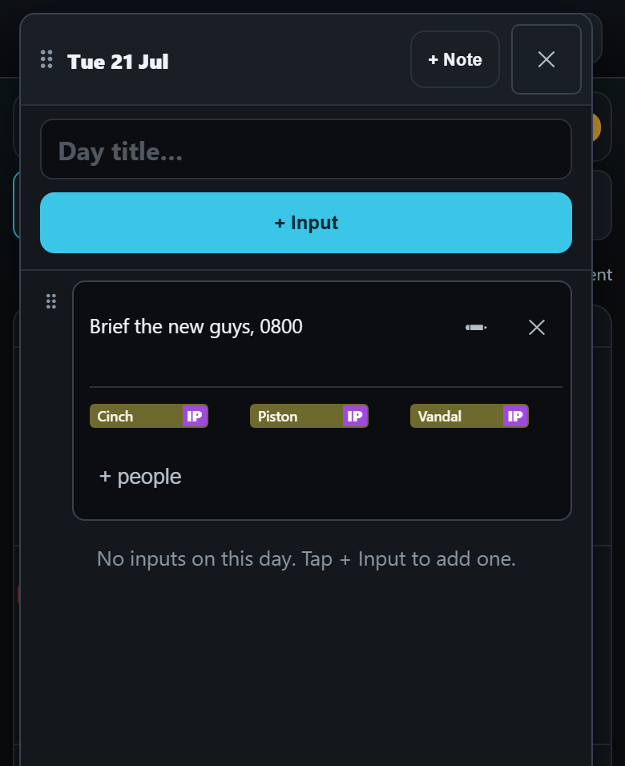
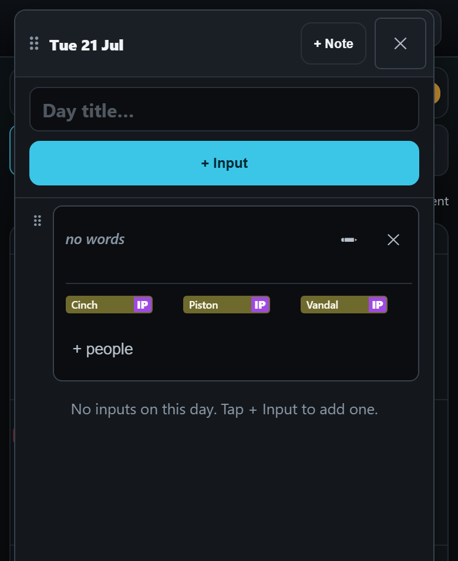
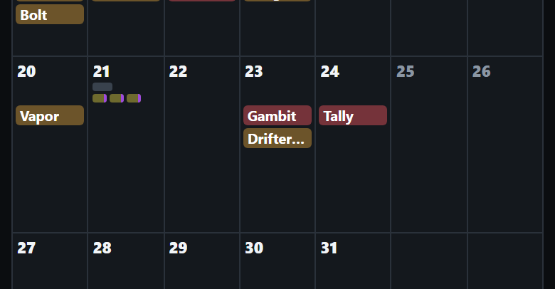

<title>Note With Pucks</title>
<link rel="stylesheet" href="https://fonts.googleapis.com/css2?family=Barlow:wght@400;500;600&family=Barlow+Semi+Condensed:wght@600;700&display=swap">
<style>
  /* One column of phone pictures, each with a one-line caption; the three questions sit at the foot as answer cards.
     A single dark look, the app's own: its panels, its cyan, its amber. */
  :root {
    color-scheme: dark;
    --bg: #0b0d11; --panel: #14181e; --edge: #2a313b; --ink: #e9edf2; --ink-2: #a8b1bd; --ink-3: #7a8491;
    --accent: #3bc6e8; --mark: #ffd60a;
    --display: "Barlow Semi Condensed", "Arial Narrow", Arial, sans-serif;
    --body: Barlow, "Segoe UI", Arial, sans-serif;
  }
  body { background: var(--bg); color: var(--ink); font-family: var(--body); font-size: 16px; line-height: 1.45; }
  main { max-width: 760px; margin: 0 auto; padding-inline: 16px; padding-block: 20px 48px; display: flex; flex-direction: column; gap: 28px; }
  h1 { font-family: var(--display); font-weight: 700; font-size: 30px; line-height: 1.1; margin: 0; text-wrap: balance; }
  h2 { font-family: var(--display); font-weight: 700; font-size: 21px; margin: 0; text-wrap: balance; }
  p { margin: 0; color: var(--ink-2); max-width: 62ch; }
  .lede { color: var(--ink); }
  .tag { font-family: var(--display); font-weight: 700; letter-spacing: .08em; text-transform: uppercase; font-size: 12px; color: var(--ink-3); }
  .tag.idea { color: var(--mark); }
  .pair { display: grid; grid-template-columns: repeat(auto-fit, minmax(260px, 1fr)); gap: 16px; align-items: start; }
  figure { margin: 0; display: flex; flex-direction: column; gap: 8px; min-width: 0; }
  figure button { all: unset; cursor: zoom-in; display: block; border: 1px solid var(--edge); border-radius: 12px; overflow: hidden; background: var(--panel); }
  figure button:focus-visible { outline: 2px solid var(--accent); outline-offset: 2px; }
  figure img { display: block; width: 100%; height: auto; }
  figcaption { display: flex; flex-direction: column; gap: 2px; }
  figcaption b { font-weight: 600; color: var(--ink); }
  figcaption span { color: var(--ink-2); font-size: 15px; }
  section { display: flex; flex-direction: column; gap: 12px; }
  .q { border: 1px solid var(--edge); border-radius: 12px; background: var(--panel); padding: 14px 16px; display: flex; flex-direction: column; gap: 6px; }
  .q b { color: var(--ink); font-weight: 600; }
  .q .rec { color: var(--accent); font-weight: 600; }
  .note { font-size: 14px; color: var(--ink-3); }
  dialog { border: 0; padding: 0; background: #000; max-width: 100vw; max-height: 100dvh; width: 100vw; height: 100dvh; overflow: auto; }
  dialog::backdrop { background: #000; }
  dialog img { display: block; width: 780px; max-width: none; margin: 0 auto; cursor: zoom-out; }
  dialog button { position: fixed; top: calc(10px + env(safe-area-inset-top, 0px)); right: 12px; font: 600 15px var(--body); color: var(--ink); background: var(--panel); border: 1px solid var(--edge); border-radius: 10px; padding: 8px 14px; }
</style>
<main>
  <header style="display:flex;flex-direction:column;gap:8px">
    <span class="tag">A drawing · nothing here is built</span>
    <h1>A note that carries its own pucks</h1>
    <p class="lede">Your idea: instead of a separate “+ Pucks” button, people are added on the note itself. These pictures are made from the real app’s own parts, rearranged. Tap a picture to see it full size.</p>
  </header>

  <section>
    <div class="pair">
      <figure>
        <button type="button" data-zoom="img/note-with-pucks/a-today.png" aria-label="Open picture: today"></button>
        <figcaption><span class="tag">Today</span><b>Two separate things</b><span>A note is words only. A row of pucks is people only. Each has its own button in the top bar.</span></figcaption>
      </figure>
      <figure>
        <button type="button" data-zoom="img/note-with-pucks/b-note-with-people.png" aria-label="Open picture: your idea"></button>
        <figcaption><span class="tag idea">Your idea</span><b>One thing: a note with its people</b><span>One “+ Note” button. Inside the note’s box: its words, then its people, then “+ people” to add more.</span></figcaption>
      </figure>
    </div>
  </section>

  <section>
    <h2>Two more views</h2>
    <div class="pair">
      <figure>
        <button type="button" data-zoom="img/note-with-pucks/c-people-only.png" aria-label="Open picture: people and no words"></button>
        <figcaption><b>People and no words</b><span>A note could hold only people. That keeps what a row of pucks does today. See question 1.</span></figcaption>
      </figure>
      <figure>
        <button type="button" data-zoom="img/note-with-pucks/d-month.png" aria-label="Open picture: on the month"></button>
        <figcaption><b>On the month</b><span>The day’s cell would look as it does now: a small mark for the note, and tiny pucks for its people.</span></figcaption>
      </figure>
    </div>
  </section>

  <section>
    <h2>Three questions for you</h2>
    <div class="q"><b>1. May a note hold people and no words?</b><span><span class="rec">I recommend yes.</span> Otherwise a plain list of people for a day, which you can make today, would need made-up words.</span></div>
    <div class="q"><b>2. How do you take a person off a note?</b><span><span class="rec">I recommend: as today.</span> Drag the puck off the note, or onto another puck to swap places. Nothing new to learn.</span></div>
    <div class="q"><b>3. Build it before “merge live”, or after as its own small job?</b><span><span class="rec">I recommend after.</span> It changes how a note is saved, so it needs its own tests and check. The calendar work is ready to merge without it.</span></div>
    <p class="note">The notes and rows of pucks in the app now are demo data, so none of them needs carrying over.</p>
  </section>
</main>
<dialog id="zoom" aria-label="Picture, full size"><button type="button" id="zoomClose">Close</button></dialog>
<script>
  const dlg = document.getElementById('zoom'), big = document.getElementById('zoomImg')
  document.querySelectorAll('[data-zoom]').forEach(b => b.addEventListener('click', () => {
    big.src = b.dataset.zoom; big.alt = b.querySelector('img').alt
    if (dlg.showModal) dlg.showModal(); else dlg.setAttribute('open', '')
  }))
  const shut = () => { if (dlg.close) dlg.close(); else dlg.removeAttribute('open') }
  document.getElementById('zoomClose').addEventListener('click', shut)
  big.addEventListener('click', shut)
</script>
